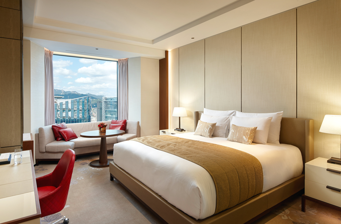
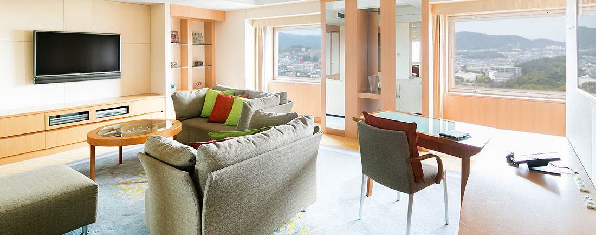

객실 소개 - 당산

K-호텔 당산 디럭스 룸은 비즈니스호텔의 장점을 모두 갖추었습니다.
심플 앤 모던 콘셉트를 바탕으로 내 집 같은 편안함과 안락한 분위기를
느낄 수 있는 도심 속 휴식공간입니다.
- 위치: 3층 / 5층
- 침대 타입: 더블 / 트윈 사이즈
- 전망: 시티뷰
- 객실 면적: 29.7㎡ (1침실, 1욕실)
- 최대인원: 성인 2인 기준, 최대 3인
K-호텔 당산 스탠다드 룸은 거실과 침실을 분리한 설계와
넓은 욕실과 쇼파로 여유로운 공간을 제공합니다.
잦은 출장으로 지쳐 휴식이 필요한 비즈니스 고객에게는 여유로움과 휴식을,
가족 단위의 고객에게는 넓은 공간과 편안함을 선사합니다.
- 위치: 4층
- 침대 타입: 더블 사이즈
- 전망: 스트릿뷰
- 객실 면적: 47.4㎡ (1침실, 1거실, 1욕실, 1화장실)
- 최대인원: 성인 2인 기준, 최대 3인


K-호텔 당산 스위트룸은 최상층의 단 하나뿐인 특별실 입니다.
남산타워을 바라보면서 일상에서 벗어난 숙박을 즐기실 수 있습니다.
- 위치: 7층
- 침대 타입: 킹 사이즈
- 전망: 스트릿뷰
- 객실 면적: 97.4㎡ (2침실, 1거실, 1욕실, 2화장실)
- 최대인원: 성인 2인 기준, 최대 3인